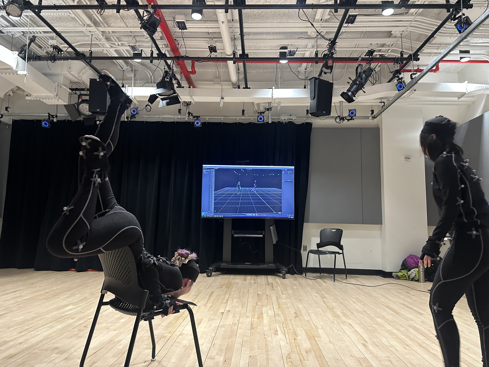
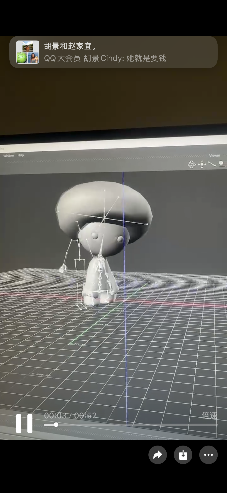
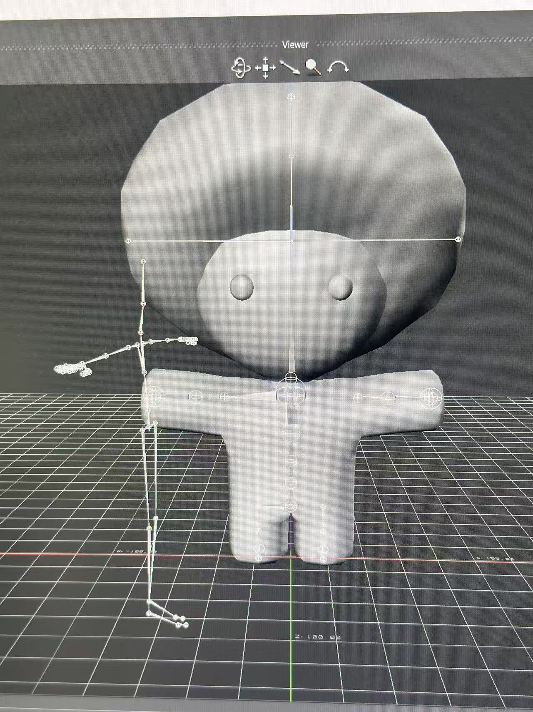
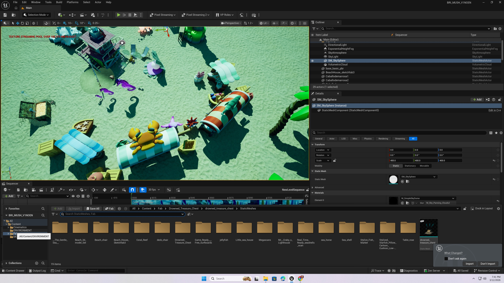

rockrock mushroom babe
Overview
rockrock mushroom babe is a short film inspired by SpongeBob — a story about a mushroom baby who lives under the sea, wakes up, hops onto a fish, and sets off on his journey. The film was built on personal motion capture recordings and hand-controlled rigged data to construct the mushroom's animation, with the underwater environment and camera movement rendered entirely inside Unreal Engine. The final edit was assembled in Premiere Pro.
The project sits at the intersection of live performance capture and real-time 3D rendering — exploring how a character's weight, rhythm, and personality can be shaped through the translation from human movement data to a fully digital body. What gets preserved, what gets amplified, and what new life emerges in that process.





Process
The environment was built using free Fab assets and styled into a beach-themed scene, with lighting adjusted to a greenish-blue tone to evoke an underwater atmosphere. Multiple cameras were set up — one positioned high above to capture the sweeping movement of fish and jellyfish, and another from a first-person perspective to bring the viewer into the mushroom baby's world.
After rendering the clips, they were brought into Premiere Pro where bubble sound effects, background music, and a recorded voice-over were layered in to complete the atmosphere.
For the character, a free mushroom model was sourced online and further adjusted in Blender to better fit the scene. This part remains a work in progress — the limbs are relatively short, which limits the range of motion and makes each step appear smaller than intended. Refining the rig and proportions is an ongoing goal.